2 Version Control and Branch Management (Git)
Resume
Dalam materi ini, mempelajari:
- Pengertian dan jenis-jenis Versioning
Versioning adalah melakukan pengaturan versi atau pelacakan setiap
perubahan dari setiap code program. Adapun tujuan utamanya yaitu
melakukan manajemen project serta tarcking terhadap perubahan yang
terjadi pada code program, baik yang dilakukan oleh personal
ataupun tim. Didalam membangun setiap project pasti ada sebuah
perubahan dan koreksi, meskipun itu adalah sebuah project
profesional dan besar.
- Pengertian Git dan macam-macam Git command
Adapun version control yang paling populer hingga sekarang adalah
GIT. GIT merupakan version control system populer yang digunakan
para developer untuk mengembangkan software secara bersama-sama.
GIT sendiri bersifat terdistribusi, yaitu dapat diakses secara
bersama sama. GIT dibuat oleh Linus Torvalds pada tahun 2005.
Dalam GIT terdapat 3 buah area yaitu working tree, stagging area,
dan history. Dari masing-masing area tersebut terdapat berbagai
git command untuk melakukan berbagai tugas. Mulai dari git init
untuk menyiapkan repository lokal untuk mengontrol berbagai
perubahan, git status untuk mengetahui perubahan apa saja yang
terjadi, git add untuk memindahkan dari working tree area ke
stagging area, git commit untuk memindahkan dari stagging area ke
histroy, dan masih banyak command lainnya yang dapat digunakan
sesuai dengan kondisi yang terjadi.
- Manajemen Branch pada Git
Dalam git dapat ditambahkan beberapa branch dengan tujuan membuat
sebuah jalur baru tanpa mengganggu jalur utama, dalam hal ini
dapat berlaku apabila dalam pengembangan code akan ditambahkan
atau membuat eksperimen sebuah fitur baru. Pada praktiknya brach
tersebut dapat dilakukan berbagai manajemen, mulai dari membuat
branch baru dan menambahkan fitur lain hingga melakukan merge pada
branch yang diinginkan.
Task
-
Membuat repository baru di github dan melakukan manajemen branch
Pada task ini, membuat sebuah repository baru dan membuat 3 buah
branch tambahan selain dari branch master, dengan ketentuan
menambahkan branch develop kemudian lakukan pengembangan fitur
dengan menambahkan 2 buah branch baru, pada masing-masing branch
tambahkan fitur lalu merge dengan branch develop.
Link :
Version Control and Branch Management (Git)
Screenshots :
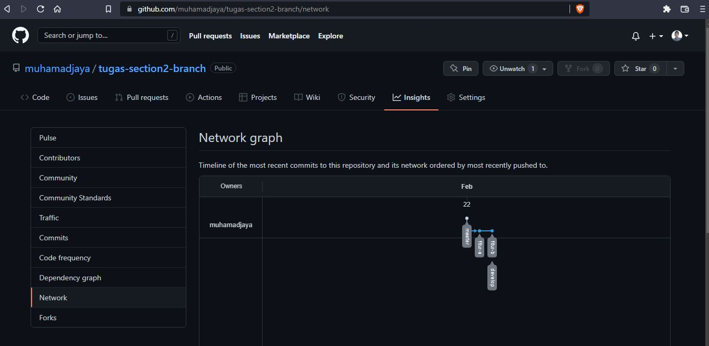
3 Introduction UI/UX
Resume
Dalam materi ini, mempelajari:
- User Experience (UX)
User Experience (UX) adalah apapun yang pengguna rasakan ketika
menggunakan produk yang kita buat. UX terdiri dari 6 bagian,
diantaranya : Business Logic, Technology, Incteraction Logic,
Design, Computer Communication, dan Business. Dan beberapa tahapan
Yang bisa dilakukan ketika hendak mendesain sebuah User
Experience, yaitu : empathize, define, ideate, prototype, dan
validate.
- User Interface (UI)
User Interface (UI) adalah tampilan yang user gunakan ketika
berinteraksi dengan produk yang kita buat. Terdapat 4 buah Pilar
pada UI, diantaranya: Consistency (menggunakan desain pola yang
sama pada setiap halaman dan urutan pada situasi pada halamannya
mirip), Keep the interface simple (menghilangkan elemen-elemen
yang tidak diperlukan pada sebuah halaman dan gunakan bahasa yang
jelas), Good Typography (harus diperhatikan typeface, yaitu pola
huruf yang digunakan harus memiliki pola yang sama. Dan perhatikan
juga mengenai ukuran, jenis, dan susunan dari text dengan tujuan
supaya memudahkan untuk dibaca), dan Offer Informative Feedback
(feedback yang diberikan kepada user harus berarti, relevan, dan
jelas).
- Prototyping
Prototype merupakan sebuah simulasi atau contoh sample yang
menggambarkan final produk yang kita buat. Tujuannya yaitu untuk
melakukan testing mengenai produk yang dibuat sebelum menghabiskan
waktu dan uang yang dihabiskan untuk membuat produk yang dibuat.
Tujuan lainnya yaitu mendapatkan feedback dari user, stakeholder,
dan tim agar mereka dapat memberikan mengenai produk yang akan
dibuat.
Task
- Mengidentifikasi desain website
Pada task ini, mengidentifikasi 3 buah desain website serta
menjelaskan UI/UX nya beserta color palette.
Link :
Introduction UI/UX
Screenshots :
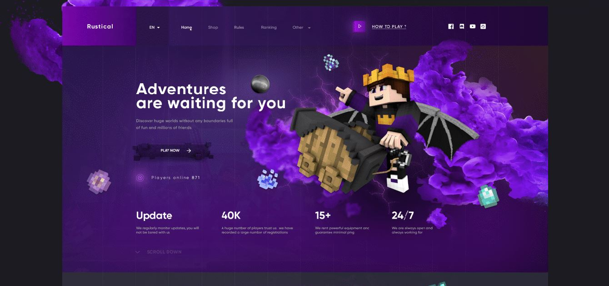
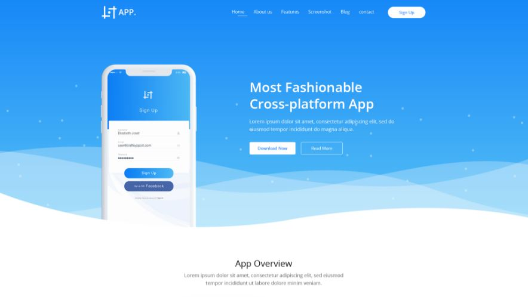
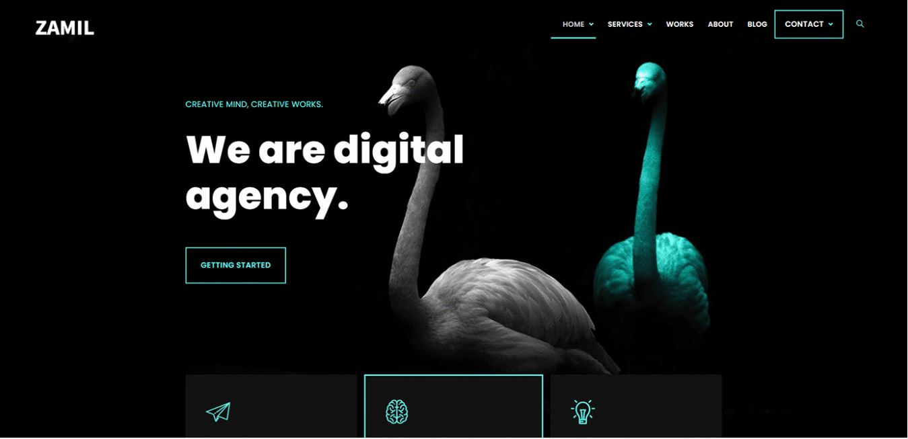
4 Figma
Resume
Dalam materi ini, mempelajari:
- Pengertian Figma
Figma adalah editor grafik vektor dan alat prototyping dengan
keutamaannya yang berbasis web, dengan fitur offline tambahan yang
diaktifkan oleh aplikasi desktop untuk macOS dan Windows.
- Kelebihan dan Kekurangan Figma
Kelebihan dari figma yaitu : bersifat gratis, dapat berjalan pada
Mac dan PC, dapat mengimport file sketsa, dapat mengintegrasikan
para developer yang terpisah, memiliki library untuk tim secara
baik, dan dapat integrasi prototype secara maksimal.
Kekurangan dari figma yaitu : Harus terhubung dengan internet.
- Melakukan Desain dengan Figma
Terdapat beberapa hal yang harus diperhatikan sebelum mendesain
dengan figma, diantaranya : melakukan pengaturan pada frame baru
atau disebut juga artboards, tetapkan grid dan layout columns
sesuai dengan desain yang akan dibuat, perhatikan layer dan
groups, pilih vector shapes yang sesuai, import gambar dan lakukan
manipulasi sesuai keinginan, dan buat typography yang menarik.
Task
-
Membuat desain UI/UX dan membuat prototype dari desain tersebut.
Pada task ini, membuat sebuah desain UI/UX dari desain yang
dipilih pada tugas sebelumnya menggunakan tools Figma dan membuat
prototype dari desain tersebut.
Link :
Figma
Screenshots :
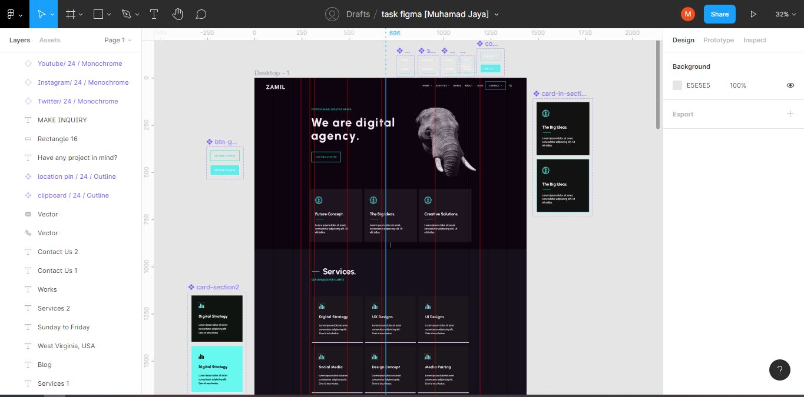
5 HTML
Resume
Dalam materi ini, mempelajari:
- Pengertian HTML serta kegunaannya.
HTML (Hypertext Markup Language) adalah sebuah standar yang
digunakan secara luas untuk menampilkan halaman web. Terdapat
beberapa kegunaan dari HTML seperti : membuat struktur dari
halaman website, mengatur tampilan dan isi dari halaman web,
membuat tabel dengan tag HTML table, membuat form HTML, dan
lain-lain.
- Dokumentasi dan Struktur HTML.
Berikut merupakan dokumentasi pada HTML yang harus diperhatikan :
<!DOCTYPE html> |
mendefinisikan dokumen tersebut sebagai HTML5 |
<html> |
elemen root dari halaman HTML |
<head> |
berisi informasi meta tentang dokumen |
<title> |
menentukan judul dari dokumen |
<body> |
berisi konten halaman yang terlihat |
Struktur halaman pada HTML :
<!DOCTYPE html>
<html>
<head>
<title>Judul Website </title>
</head>
<body>
<p>Konten Website</p>
</body>
</html>
- Macam-macam tag HTML dan fungsinya.
| Tag |
Keterangan |
<div> |
untuk membuat sebuah bagian dalam dokumen |
<h1> sampai <h6>
|
untuk membuat heading |
<a href=" "> |
untuk membuat hyperlink |
<img src=" "> |
untuk menyisipkan gambar |
| dan tag lainnya. |
Task
-
Membuat beberapa file HTML dengan nama index.html, form.html, dan
welcome.html.
Pada task ini, membuat 3 buah halaman web sederhana. Pada halaman
index.html akan menampilkan halaman utama dan terdapat link untuk
melakukan sign up untuk menuju ke halaman form.html, kemudian
apabila telah mengisi form dan menekan tombol submit pada halaman
form.html kemudian akan diarahkan menuju ke halaman welcome.html.
Link :
HTML
Screenshots :
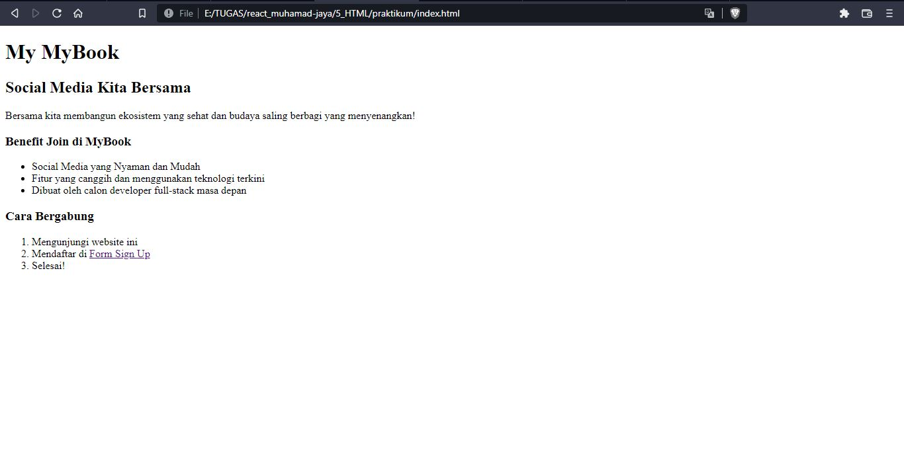
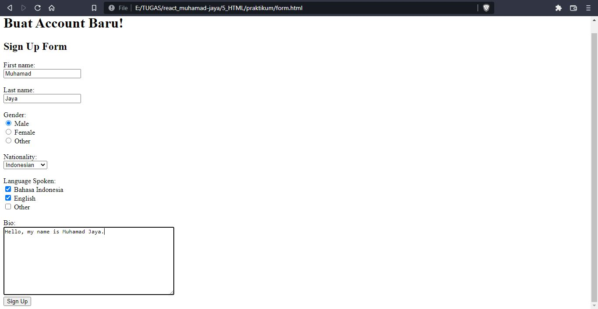
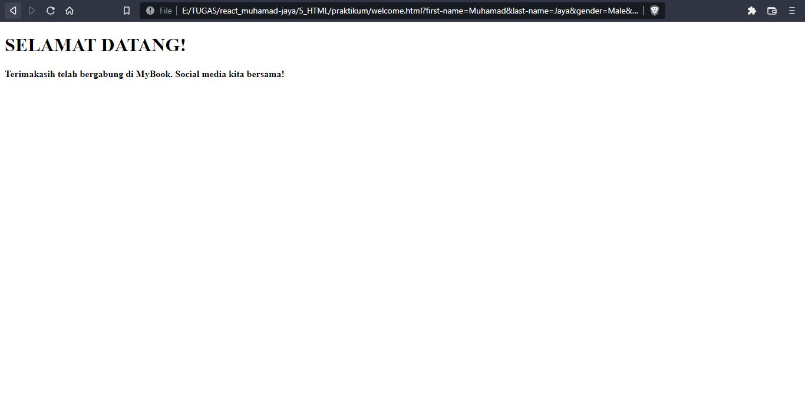
6 CSS
Resume
Dalam materi ini, mempelajari:
- Pengertian CSS serta fungsinya.
CSS adalah kependekan dari Cascading Style Sheet. CSS adalah suatu
kode pemrograman yang berfungsi untuk mendekorasi gaya tampilan
halaman web supaya lebih menarik. Berikut merupakan beberapa
fungsi dari CSS : dapat menghias halaman web. (Seperti mengatur
color, size, font, background, width, height, dan lainnya), dapat
mengatur posisi pada halaman web. (Misalnya mengatur float, align,
display, position, dan lainnya), dan lain-lain.
- Menambahkan file CSS.
Terdapat 3 cara untuk menambahkan file CSS ke dalam HTML, yaitu :
-
External CSS
<link rel="stylesheet" href="main.css"
>
Syntax tersebut disisipkan kedalam tag <head> pada HTML.
Dan ekstensi untuk file CSS adalah .css.
-
Internal CSS
<style> body ❴ background-color: #FFFFFF;
❵ h1 ❴ color: #f47523; margin-left: 70px;
❵
Syntax ini dapat digunakan di dalam satu file HTML.
Didefinisikan di dalam elemen <style>, di dalam bagian
<head> atau di dalam bagian <body>.
-
Inline CSS
<h1 style="color: #19355f;">Hello
World</h1>
Syntax tersebut disisipkan kedalam tag <head> pada HTML.
Dan ekstensi untuk file CSS adalah .css.
- Penggunaan CSS Selector.
CSS Selector adalah pola yang digunakan untuk memilih element,
yang ingin di styling. Penanda HTML ke dalam CSS. Dapat
menggunakan selector ID dan Class.
ID → (#) Setiap elemen hanya dapat memiliki satu tag id. Dalam
satu halaman tidak boleh ada dua penamaan id yang berbeda.
Class → (.) Tag class dengan nama yang sama dapat dipakai
berulang-ulang pada satu halaman. Satu elemen boleh memiliki lebih
dari satu Class yang berbeda-beda.
Task
-
Mengubah tampilan dari file 1.html dan membuat file 2.html
kemudian mendesain file tersebut.
Pada task ini diperintahkan untuk mengubah sebuah tampilan dari
file 1.html menjadi tampilan yang sesuai dengan beberapa ketentuan
yaitu menggunakan font-family: 'Slabo 27px', serif; dan font-size:
20px;. Serta, membuat tampilan website dengan menambahkan header
dan konten yang responsif.
Link :
CSS
Screenshots :
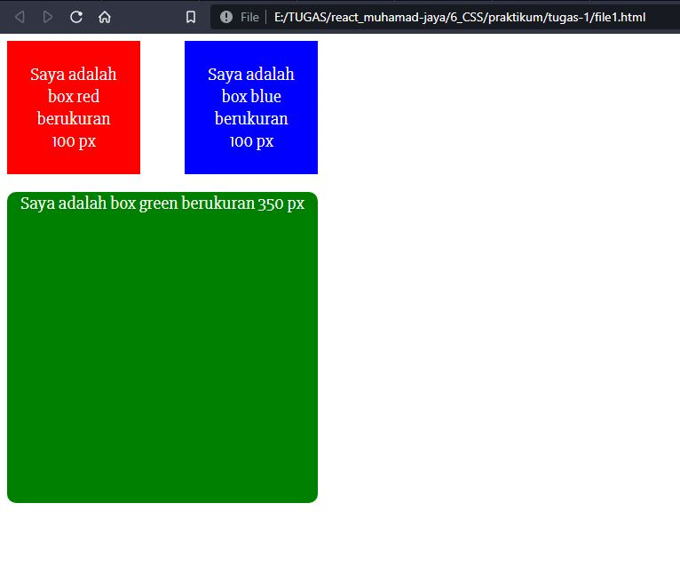
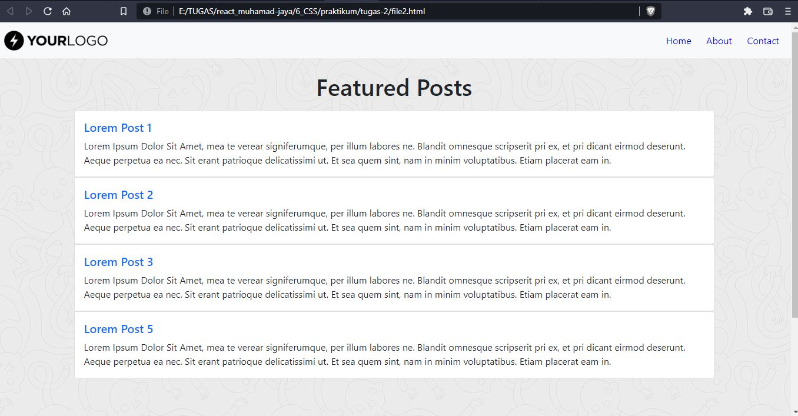
7 Bootstrap
Resume
Dalam materi ini, mempelajari:
- Pengertian Bootstrap.
Pengertian dari Bootstrap adalah sebuah framework CSS atau
kerangka kerja CSS yang bersifat open source dan digunakan untuk
membuat tampilan desain website supaya responsive dan mempercepat
waktu pengerjaannya. Terdapat beberapa kelebihan yang dimiliki
bootstrap untuk membangun sebuah halaman website diantaranya :
gratis, mudah dipelajari untuk pemula, cepat dalam membaangun
website, dan mendukung tampilan yang responsive.
- Penggunaan Boostrap dalam Membuat Website.
Sebelum memulai menggunakan Bootstrap terdapat hal-hal yang perlu
diperhatikan :
-
Untuk dapat menggunakan bootstrap, dapat langsung menuju
website bootstrap dan unduh secara langsung di website resmi
bootstrap.
-
Setelah mengunduh bootstrap, langkah selanjutnya adalah bisa
dengan cara mempelajari example, ataupun mempelajari
komponen-komponen yang ada pada bootstrap
Untuk menggunakan Bootstrap dapat menggunakan starter template
yang telah disediakan pada dokumentasi Bootstrap. Kemudian, dapat
menambahkan beberapa class untuk melakukan customize tampilan
website sesuai yang diinginkan.
- Class-Class Pada Bootstrap.
Terdapat banyak sekali class yang disediakan oleh Bootstrap yang
dapat digunakan untuk mempercantik tampilan website yang akan
dibuat. Adapun beberapa diantaranya seperti :
| Class |
Keterangan |
| container |
untuk membungkus blok di dalamnya, sehingga terlihat rapi
terhadap ukuran layar
|
| row dan col |
untuk membuat baris dan kolom. Kedua class ini gunakan untuk
membuat grid
|
| navbar |
untuk membuat navbar |
| dan class lainnya. |
Dari berbagai class yang ada dan telah disediakan pilihan style
yang beragam, dapat juga ditambahkan custom CSS yang kita buat
sendiri baik secara inline, internal, maupun eksternal.
Task
- Membuat Halaman Website Sederhana Menggunakan Bootstrap.
Pada task ini diperintahkan untuk membuat sebuah tampilan website
sederhana yang didalamnya terdapat header, body, dan footer
menggunakan framework Bootstrap. Kemudian, website tersebut diatur
supaya responsive diberbagai device.
Link :
Bootstrap
Screenshots :
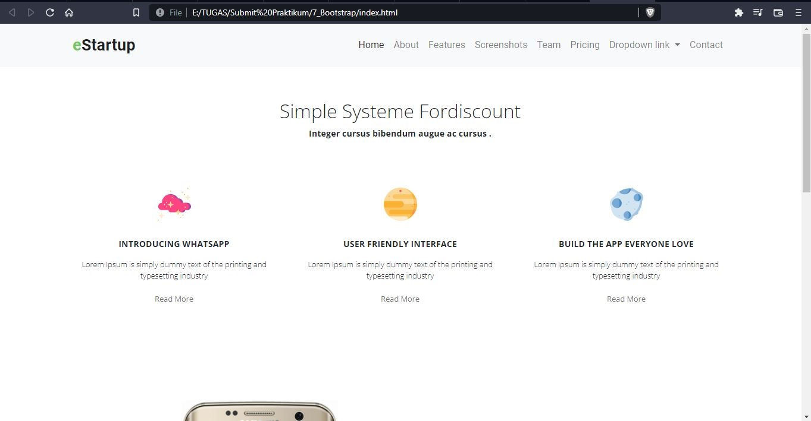
8 Javascript Refreshment
Resume
Dalam materi ini, mempelajari:
- Pengertian Javascript dan Alasan Untuk Mempelajarinya.
Javascript adalah bahasa pemrograman yang high-level, scripting,
untyped dan interpreted. Terdapat beberapa alasan untuk
mempelajari javascript : javascript merupakan bahasa pemrograman
tingkat tinggi, diciptakan supaya dapat berinteraksi dengan web
browser, tidak berpengaruh pada tipe data, dan bahasanya fleksibel
dan mudah untuk diuji.
- Declaration Declaration dan Scope pada Javascript.
Declaration adalah proses pembuatan variabel untuk menyimpan data.
Variabel ada 3 : var (umumnya, kita jarang memakai ini), let
(digunakan saat membutuhkan nilai yang dapat diubah), dan const
(digunakan saat membutuhkan nilai yang tidak bisa di "reasign").
Saat mendeklarasikan variabel const, maka harus membri nilai pada
variabel tersebut. Proses redeclaration hanya dapat dilakukan pada
var, sedangkan let dan const tidak dapat dilakukan redeclaratio.
Proses reassignment dapat dilakukan pada var dan let, sedangkan
const tidak dapat dilakukan reassignment. Scooping adalah
menentukan dimana variabel, fungsi, dan objek diatur dan dapat
diakses dalam kode kita. Ini berarti ruang lingkup variabel
dikendalikan oleh lokasi deklarasi variabel.
Scoope terdiri dari 3 bagian : Global (dapat diakses oleh semua
bagian kode), Function (hanya dapat diakses didalam area scope
function itu sendiri), dan Block (hanya dapat diakses oleh bagian
block tersebut)
- Function dan Class.
Function di dalam javascript adalah sebuah objek. Karena memiliki
properti dan method. Function digunakan untuk melakukan
serangkaian komputasi / prosedur yang dapat digunakan berulang
kali. Class adalah prototype dari suatu object yang akan dibuat.
Task
-
Mengambil index ke 2 di dalam array kemudian menampilkannya pada
console. Mengubah kode sehingga menampilkan statement yang
terdapat pada block if. Memanggil sebuah fungsi yang telah
dideklarasikan. Mengubah kode sehingga menampilkan output yang
sesuai ketentuan.
-
Menjelaskan kenapa block if tidak dapat tampil. Menjelaskan kenapa
kode pada baris 26 dapat menyebabkan error. Menjelaskan jika kode
pada baris 26 diberi komentar apakah baris 28 dapat dijalankan.
-
Melakukan destructuring pada sebuah variabel yang bertipe array.
-
Mengubah karakter yang terdapat pada nilai dari sebuah variabel.
- Melakukan perkalian pada setiap elemen array.
- Membulatkan nilai pada sebuah array.
Link :
Javascript Refreshment
Screenshots :
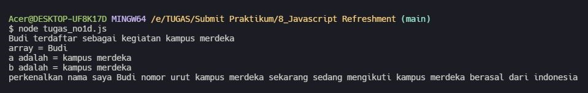
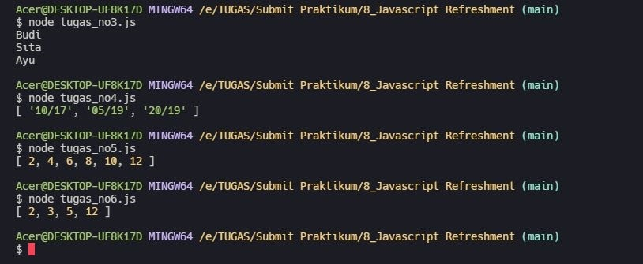
9 Clean Code
Resume
Dalam materi ini, mempelajari:
- Pengertian Clean Code.
Clean Code adalah istilah untuk kode yang mudah dibaca, difahami
dan diubah oleh programmer. Alasan kenapa clean code harus
diterapkan : Work Collaboration, Feature Development, dan Faster
Development.
- Karakteristik Clean Code.
Terdapat beberapa karakteristik dari clean code, yaitu : mudah
difahami, mudah dieja dan dicari, singkat namun mendeskripsikan
konteks, konsisten, hindari penambahan konteks yang tidak perlu,
komentar, good function, gGunakan konvensi, dan formatting.
- Prinsip-Prinsip Clean Code.
Beberapa prinsip yang diterapkan pada clean code, seperti :
-
KISS (Keep It So Simple) yaitu, hindari membuat fungsi yang
dibuat untuk melakukan A, sekaligus memodifikasi B, mengecek
fungsi C, dan sebagainya.
-
DRY (Don't Repeat Yourself) yaitu, duplikasi code terjadi
karena sering copy paste. Untuk menghindari duplikasi code
buatlah fungsi yang dapat digunakan secara berulang-ulang.
Task
- Melakukan Analysis dan Rewrite Code.
Pada task ini, ditugaskan untuk menganalisis terhadap kesalahan
penulisan yang terdapat pada suatu kode dan menulis ulang kode
supaya lebih terbaca dan rapih.
Link :
Clean Code
Screenshots :
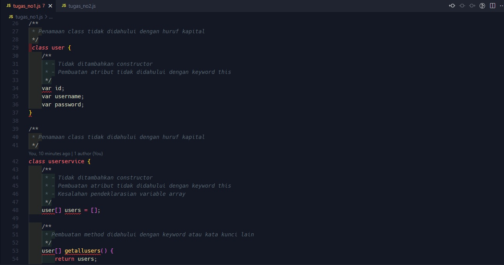
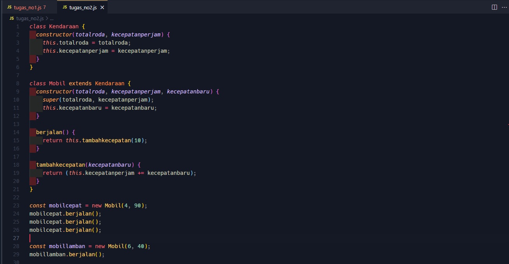